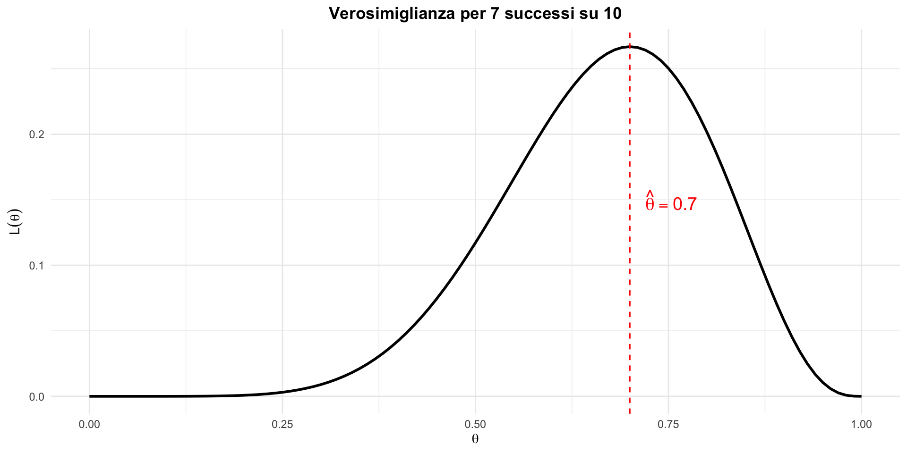
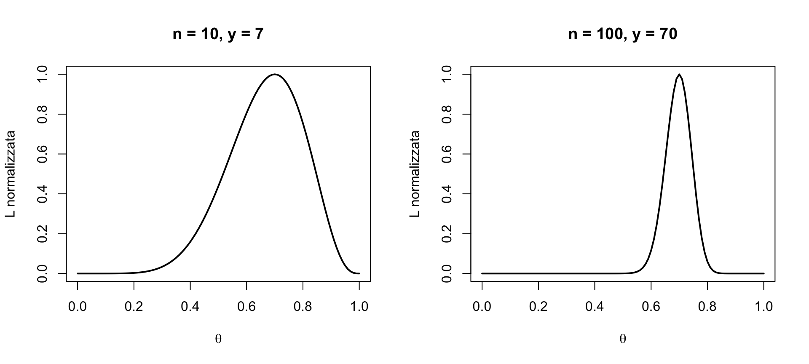

La funzione di verosimiglianza
Cosa ci dicono i dati sul parametro — Segmento 1
![]()
11 febbraio 2026
Dai dati al parametro
Il momento in cui la statistica diventa utile
Finora abbiamo imparato a descrivere l’incertezza: distribuzioni, valore atteso, varianza e covarianza.
Ma nella pratica clinica e di ricerca, il problema è diverso. Avete dei dati — per esempio, 7 pazienti su 10 migliorano dopo un trattamento — e dovete rispondere a una domanda sul mondo: qual è la vera probabilità che questo trattamento funzioni?
I dati sono noti. Il parametro è ignoto. Come si passa dai primi al secondo?
La risposta è la funzione di verosimiglianza — lo strumento che trasforma i dati in evidenza per o contro diversi valori del parametro.
È il cuore dell’inferenza statistica e da oggi in poi sarà presente in tutto ciò che studierete.
Obiettivi del segmento
- Capire cos’è la funzione di verosimiglianza.
- Capire perché è importante per la psicologia.
- Imparare a calcolarla a mano in casi semplici.
- Distinguere verosimiglianza da probabilità.
Parte 1: La domanda fondamentale
Il problema dello psicologo
Uno psicologo clinico vuole sapere:
“Qual è la probabilità che un paziente con depressione risponda positivamente a questo trattamento?”
Questa probabilità esiste, ma non la conosciamo.
Possiamo solo stimarla dai dati.
Un esempio concreto
Somministriamo un nuovo trattamento a 10 pazienti.
Risultato: 7 pazienti migliorano, 3 non migliorano.
Domanda: Qual è la “vera” probabilità di successo \(\theta\)?
Cosa sappiamo
- I dati: 7 successi su 10.
- Il modello: ogni paziente ha probabilità \(\theta\) di migliorare.
Cosa NON sappiamo:
- Il valore di \(\theta\).
L’idea della verosimiglianza
Invece di chiedere:
“Qual è la probabilità dei dati conoscendo \(\theta\)?”
chiediamo:
“Quanto sono plausibili diversi valori di \(\theta\), avendo osservato i nostri dati?”
Un cambio di prospettiva
| Probabilità | Verosimiglianza |
|---|---|
| \(\theta\) è fisso, i dati variano | I dati sono fissi, \(\theta\) varia |
| “Se \(\theta = 0.5\), quanto è probabile osservare 7/10?” | “Dato che ho osservato 7/10, quanto è plausibile \(\theta = 0.5\)?” |
Questo cambio di prospettiva è semplice ma profondo. Nella pratica, i dati li avete già raccolti — non cambiano. Ciò che volete sapere è quale valore del parametro è più compatibile con quei dati.
Parte 2: Definizione formale
La funzione di verosimiglianza
Definizione:
La verosimiglianza di \(\theta\) dato l’insieme delle osservazioni \(y\) è:
\[ \mathcal{L}(\theta \mid y) = P(y \mid \theta). \]
È la stessa formula della probabilità, ma la leggiamo in modo diverso.
La differenza cruciale
Probabilità: \(P(y \mid \theta)\)
- \(\theta\) è noto (o ipotizzato);
- \(y\) è la variabile;
- somma/integra a 1 su tutti i possibili \(y\).
Verosimiglianza: \(\mathcal{L}(\theta \mid y)\)
- \(y\) è noto (osservato);
- \(\theta\) è la variabile;
- NON somma/integra a 1.
Attenzione
La verosimiglianza non è una probabilità.
Non possiamo dire: “La probabilità che \(\theta = 0.7\) è 0.3”.
Possiamo dire:
Il valore \(\theta = 0.7\) è più verosimile del valore \(\theta = 0.6\).
Per poter dire qualcosa sulla probabilità di \(\theta\), servirà il teorema di Bayes — che vedremo nelle prossime lezioni.
Perché è importante per la psicologia?
La funzione di verosimiglianza risponde a una domanda cruciale:
in che misura i diversi valori del parametro sono compatibili con i dati osservati?
Questo è esattamente ciò che vogliamo sapere quando stimiamo:
- l’effetto di un trattamento;
- la correlazione tra due variabili;
- la media di una popolazione.
La verosimiglianza quantifica, per ogni ipotetico valore del parametro, quanto bene spiega i dati in nostro possesso.
Parte 3: Calcolo della verosimiglianza
Torniamo all’esempio
Immaginiamo di aver esaminato 10 pazienti. 7 di loro mostrano un miglioramento.
Se modelliamo l’esito di ogni paziente come una prova Bernoulliana indipendente (migliora / non migliora), il numero totale di successi segue una distribuzione binomiale:
\[ P(Y = 7 \mid \theta) = \binom{10}{7} \theta^7 (1-\theta)^3, \] dove \(\theta\) rappresenta la probabilità (ignota) di miglioramento per un paziente.
Calcoliamo \(\mathcal{L}\) per alcuni valori di \(\theta\)
Per \(\theta = 0.5\):
\[ \mathcal{L}(0.5) = \binom{10}{7} (0.5)^7 (0.5)^3 = 120 \times 0.0009766 = 0.117 \]
Calcoliamo \(\mathcal{L}\) per \(\theta = 0.7\)
\[ \mathcal{L}(0.7) = \binom{10}{7} (0.7)^7 (0.3)^3 \]
\[ = 120 \times 0.0824 \times 0.027 = 0.267 \]
Calcoliamo \(\mathcal{L}\) per \(\theta = 0.9\)
\[ \mathcal{L}(0.9) = \binom{10}{7} (0.9)^7 (0.1)^3 \]
\[ = 120 \times 0.478 \times 0.001 = 0.057 \]
Confronto
| \(\theta\) | Verosimiglianza | Interpretazione |
|---|---|---|
| 0.5 | 0.117 | Trattamento come il caso |
| 0.7 | 0.267 | Buona efficacia |
| 0.9 | 0.057 | Efficacia eccellente |
Qual è il valore \(\theta\) più verosimile, avendo osservato i nostri dati?
\(\theta = 0.7\) è il valore più verosimile tra questi tre. Notate: \(\theta = 0.9\) è meno verosimile di \(\theta = 0.5\) — avere osservato 3 insuccessi su 10 rende poco plausibile un’efficacia del 90%.
Il grafico della verosimiglianza

La stima di massima verosimiglianza
Il valore di \(\theta\) che massimizza la verosimiglianza si chiama
Stima di Massima Verosimiglianza (MLE).
Nel nostro esempio:
\[ \hat{\theta}_{\text{MLE}} = \frac{7}{10} = 0.7. \]
Perché il massimo è a 7/10?
Per la binomiale, si può dimostrare che:
\[ \hat{\theta}_{\text{MLE}} = \frac{\text{numero di successi}}{\text{numero di prove}} = \frac{y}{n}. \]
Lo stimatore di massima verosimiglianza (MLE) per una proporzione è semplicemente la frequenza relativa osservata. È il valore del parametro che massimizza la probabilità di osservare esattamente i dati raccolti.
Parte 4: Proprietà della verosimiglianza
Proprietà 1: la scala non conta
Possiamo moltiplicare \(\mathcal{L}(\theta)\) per una costante positiva senza cambiare quale \(\theta\) è “più verosimile”.
Per questo spesso si usa la verosimiglianza normalizzata:
\[ \mathcal{L}^*(\theta) = \frac{\mathcal{L}(\theta)}{\max_\theta \mathcal{L}(\theta)}. \]
Proprietà 2: il logaritmo è utile
La log-verosimiglianza è spesso più comoda:
\[ \ell(\theta) = \log \mathcal{L}(\theta). \]
Vantaggi:
- trasforma prodotti in somme;
- numeri più gestibili;
- stesso punto di massimo.
Perché usiamo il logaritmo?
Con dati indipendenti, la verosimiglianza congiunta si scrive come prodotto delle verosimiglianze individuali per ciascuna osservazione:
\[ \mathcal{L}(\theta) = \mathcal{L}_1(\theta) \times \mathcal{L}_2(\theta) \times \ldots \times \mathcal{L}_n(\theta), \] dove ciascun termine è \(\mathcal{L}_i(\theta) = p(y_i \mid \theta)\), cioè la funzione di densità (o massa) di probabilità valutata in \(y_i\) e vista come funzione di \(\theta\).
Applicando il logaritmo naturale, il prodotto si trasforma in una somma:
\[ \ell(\theta) = \log \mathcal{L}(\theta) = \log p(y_1 \mid \theta) + \log p(y_2 \mid \theta) + \ldots + \log p(y_n \mid \theta). \]
Vantaggi della log-verosimiglianza:
- Le somme sono numericamente più stabili dei prodotti (si evita l’underflow con molti dati).
- Le derivate diventano più semplici, facilitando la massimizzazione.
In sintesi:
il logaritmo trasforma un prodotto in una somma, semplificando i calcoli senza cambiare la posizione del massimo (il valore \(\theta\) più plausibile).
Proprietà 3: La verosimiglianza è relativa
Non ha senso dire “La verosimiglianza è alta” o “bassa” in senso assoluto.
Ha senso dire:
La verosimiglianza di \(\theta_1\) è doppia rispetto a quella di \(\theta_2\).
Il rapporto di verosimiglianza
Per confrontare due valori di verosimiglianza, calcoliamo il rapporto di verosimiglianza (LR):
\[ \text{LR} = \frac{\mathcal{L}(\theta_1)}{\mathcal{L}(\theta_2)}. \]
Nel nostro esempio:
\[ \text{LR} = \frac{\mathcal{L}(0.7)}{\mathcal{L}(0.5)} = \frac{0.267}{0.117} \approx 2.3. \]
Interpretazione: alla luce dei dati osservati, \(\theta = 0.7\) è circa 2.3 volte più verosimile (più “compatibile” con l’evidenza) di \(\theta = 0.5\).
Il rapporto di verosimiglianza nella pratica
Il rapporto di verosimiglianza è uno strumento che incontrerete frequentemente nella letteratura clinica e psicometrica.
In diagnostica, il rapporto di verosimiglianza (likelihood ratio, LR) di un test incarna esattamente questa idea: ci dice quanto è più probabile osservare un determinato risultato in un paziente con la condizione rispetto a uno senza.
Un LR pari a 10 significa che quel risultato è 10 volte più frequente nei malati che nei sani — un test estremamente informativo.
Il rapporto di verosimiglianza nella pratica
È la stessa identica logica che stiamo studiando: confrontare la plausibilità di due ipotesi alla luce dei dati osservati.
Parte 5: Verosimiglianza e incertezza
Esempio: Validazione di un test
Un test di screening ha una certa sensibilità \(\theta\).
Se testiamo 20 pazienti con la condizione e 14 risultano positivi:
\[ \hat{\theta} = \frac{14}{20} = 0.7. \]
La verosimiglianza ci dice quanto siamo “sicuri” di questo valore.
La quantità dei dati conta

Più dati → verosimiglianza più “stretta” → meno incertezza.
Perché la larghezza conta
La larghezza della curva di verosimiglianza ha un significato clinico diretto. Una curva larga significa che molti valori del parametro sono compatibili con i dati — la stima è imprecisa.
Immaginate di dover decidere se adottare un nuovo trattamento. Con \(n = 10\) e \(\hat{\theta} = 0.7\), la curva è così larga che anche \(\theta = 0.4\) (trattamento sostanzialmente inefficace) è ancora abbastanza plausibile. Non avete abbastanza evidenza per decidere.
Con \(n = 100\) e \(\hat{\theta} = 0.7\), la curva è stretta: \(\theta = 0.4\) è praticamente escluso. Ora avete una base solida per la decisione.
Perché la larghezza conta
Questa è la logica che sta dietro la pianificazione della dimensione campionaria: scegliete \(n\) in modo che la curva di verosimiglianza sia abbastanza stretta da permettere una decisione informata.
La verosimiglianza nell’inferenza bayesiana
La verosimiglianza è il ponte tra:
- le nostre credenze iniziali (prior);
- le nostre credenze aggiornate (posterior).
\[ \text{Posterior} \propto \text{Prior} \times \text{Verosimiglianza} \]
Ne parleremo nelle prossime lezioni. Per ora, notate che la verosimiglianza è la componente che porta l’informazione dei dati dentro l’inferenza bayesiana.
Parte 6: Esercizi
Esercizio 1
Un test di memoria viene somministrato a 5 partecipanti. Di questi, 4 rispondono correttamente a un item.
a) Scrivi la funzione di verosimiglianza per \(\theta\) (probabilità di risposta corretta).
b) Calcola \(\mathcal{L}(\theta)\) per \(\theta = 0.5, 0.8, 0.9\).
c) Qual è la stima di massima verosimiglianza?
Soluzione Esercizio 1
a) La verosimiglianza binomiale:
\[ \begin{align} \mathcal{L}(\theta) &= \binom{5}{4} \theta^4 (1-\theta)^1 \\ &= 5 \theta^4 (1-\theta) \end{align} \]
Soluzione Esercizio 1 (continua)
b) Calcoli:
- \(\mathcal{L}(0.5) = 5 \times 0.0625 \times 0.5 = 0.156\)
- \(\mathcal{L}(0.8) = 5 \times 0.4096 \times 0.2 = 0.410\)
- \(\mathcal{L}(0.9) = 5 \times 0.6561 \times 0.1 = 0.328\)
c) MLE: \(\hat{\theta} = 4/5 = 0.8\)
Interpretazione: la stima di \(\theta = 0.8\) indica un item facile — ma attenzione, con solo 5 partecipanti la curva di verosimiglianza è molto larga. Un campione così piccolo non permette di distinguere bene tra \(\theta = 0.7\) e \(\theta = 0.9\).
Esercizio 2
In uno studio sulla percezione, 3 partecipanti su 8 identificano correttamente uno stimolo.
a) Calcola il rapporto di verosimiglianza tra \(\theta = 0.5\) e \(\theta = 0.375\).
b) Quale dei due valori è più supportato dai dati?
Soluzione Esercizio 2
La verosimiglianza è \(\mathcal{L}(\theta) = \binom{8}{3} \theta^3 (1-\theta)^5 = 56 \theta^3 (1-\theta)^5\).
Per \(\theta = 0.5\):
\[ \mathcal{L}(0.5) = 56 \times 0.125 \times 0.03125 = 0.219. \]
Per \(\theta = 0.375\):
\[ \mathcal{L}(0.375) = 56 \times 0.0527 \times 0.0954 = 0.282. \]
Soluzione Esercizio 2 (continua)
a) Rapporto di verosimiglianza:
\[ \text{LR} = \frac{\mathcal{L}(0.375)}{\mathcal{L}(0.5)} = \frac{0.282}{0.219} \approx 1.29 \]
b) \(\theta = 0.375\) è circa 1.3 volte più verosimile di \(\theta = 0.5\).
Nota: \(\hat{\theta} = 3/8 = 0.375\) è la MLE. Un LR di 1.3 è modesto — i dati non distinguono in modo forte tra i due valori. Per una discriminazione più netta servirebbe un campione più grande.
Esercizio 3
Due ricercatori osservano lo stesso fenomeno:
- Ricercatore A: 6 successi su 10 prove.
- Ricercatore B: 60 successi su 100 prove.
Entrambi stimano \(\hat{\theta} = 0.6\).
Domanda: Chi ha più “evidenza” per questo valore? Perché?
Soluzione Esercizio 3
Confrontiamo le verosimiglianze normalizzate (il “picco” è sempre a 0.6, ma la larghezza cambia):
- con \(n = 10\): la curva è larga → molta incertezza;
- con \(n = 100\): la curva è stretta → poca incertezza.
Risposta: il Ricercatore B ha più evidenza perché la sua funzione di verosimiglianza è più concentrata attorno a \(\theta = 0.6\). Questo è il motivo per cui in psicologia insistiamo sulla dimensione campionaria: non basta ottenere la stima giusta — serve anche avere abbastanza dati perché la stima sia precisa.
Esercizio 4
Un test clinico ha i seguenti risultati: 0 successi su 5 prove.
a) Qual è la MLE?
b) Questo significa che \(\theta = 0\) è certo? Perché sì o perché no?
Soluzione Esercizio 4
a) MLE: \(\hat{\theta} = 0/5 = 0\)
b) No. La MLE è solo il valore più verosimile, non l’unico possibile.
La verosimiglianza per \(\theta = 0.1\) è: \[ \mathcal{L}(0.1) = (0.9)^5 = 0.59. \]
Questo non è zero! Altri valori di \(\theta\) sono ancora plausibili.
Perché questo esercizio è importante
Nella pratica clinica, la situazione “0 successi su pochi casi” si presenta spesso: un nuovo trattamento potrebbe non funziona sui primi 5 pazienti. La MLE dice \(\hat{\theta} = 0\), ma sarebbe sbagliato concludere che il trattamento è certamente inutile.
Con \(n = 5\), anche un trattamento che funziona il 30% delle volte ha una probabilità ragionevole (\(0.7^5 = 0.17\), cioè il 17%) di produrre 0 successi su 5 prove.
Questo è uno dei limiti della MLE con campioni piccoli, e uno dei motivi per cui l’approccio bayesiano — che combina i dati con conoscenze pregresse — è particolarmente utile in contesti clinici.
Riepilogo
La verosimiglianza misura quanto un parametro è compatibile con i dati.
Non è una probabilità — non somma a 1.
La MLE è il valore che massimizza la verosimiglianza.
Più dati → verosimiglianza più concentrata → meno incertezza.
È il cuore dell’inferenza statistica moderna.
Per la prossima parte
Ripassare:
- capitolo sulla verosimiglianza su https://ccaudek.github.io/utet-prob/
- distribuzione binomiale
Prossimo segmento: calcolare e visualizzare la verosimiglianza in R.